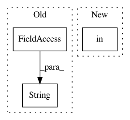

1d9f12ae9b461689b5019b711c597d1d06c13a72,test_video.py,,,#,49
Before Change
assert fps!=0, "Fps is zero, Please enter proper video path"
pbar = tqdm(total = content_video_length)
if(str(style_path).endswith(".mp4") or str(style_path).endswith(".mpg") or str(style_path).endswith(".avi")):
style_video = cv2.VideoCapture(args.style_path)
style_video_length = int(style_video.get(cv2.CAP_PROP_FRAME_COUNT))
After Change
style_video.release()
content_video.release()
if style_path.suffix in [".jpg", ".png", ".JPG", ".PNG"]:
output_video_path = output_dir / "{:s}_stylized_{:s}{:s}".format(
content_path.stem, style_path.stem, args.save_ext)
In pattern: SUPERPATTERN
Frequency: 3
Non-data size: 3
Instances
Project Name: naoto0804/pytorch-AdaIN
Commit Name: 1d9f12ae9b461689b5019b711c597d1d06c13a72
Time: 2020-11-13
Author: levindabhi17@gmail.com
File Name: test_video.py
Class Name:
Method Name:
Project Name: tensorflow/hub
Commit Name: 6fa628a1cb68800faaedc98ce6f448bf0c3bfb9f
Time: 2020-02-18
Author: no-reply@google.com
File Name: tensorflow_hub/tf_utils.py
Class Name:
Method Name: absolute_path
Project Name: lmcinnes/umap
Commit Name: 953ec6dcd4388f96581a0856e55cf21f1c64c914
Time: 2021-02-11
Author: leland.mcinnes@gmail.com
File Name: umap/tests/test_umap_ops.py
Class Name:
Method Name: test_disconnected_data